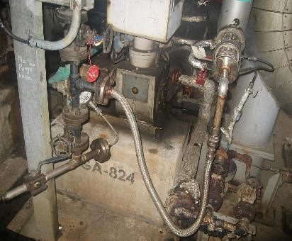

Hazard prediction training
作業
バルブ操作
重量物の移動
清掃作業
高所での作業
移液、抜液作業
設備管理
サンプリング
リフトでの作業
歩行
階段の昇降
ゲージ確認
電源投入
ライン解体
包装機械の作業
中和作業
化学品の保管
資材の移動（重量物でない）
原料投入作業
Check start
労災事例

どんな危険があるか? 2つ考えよう
転倒
切れ、擦れ
有毒物との接触
挟まれ、巻き込まれ
高温、低温物との接触
墜落、転落
激突する
無理な動作、動作の反動、腰痛
激突される
飛来、落下
倒壊、崩壊
踏み抜き
窒息
爆発
破裂
火災
感電
交通事故
転倒
切れ、擦れ
有毒物との接触
挟まれ、巻き込まれ
高温、低温物との接触
墜落、転落
激突する
無理な動作、動作の反動、腰痛
激突される
飛来、落下
倒壊、崩壊
踏み抜き
窒息
爆発
破裂
火災
感電
交通事故
作業の危険予知アドバイス
その他、共通の危険予知アドバイス
Your browser does not support the audio element.